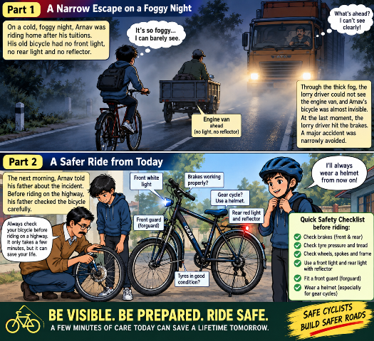

A foggy highway, an unlit bicycle, and one moment's carelessness — one night changed the way Pradip rode his cycle forever.
🚲 A Story of Getting Home Safely
It was a cold night, wrapped in fog. Pradip was cycling back home after his tuition class. As he pressed down on the pedals, there was no sound around him except the whirring of the wheels. A thin, white sheet of fog had settled over the road, cutting visibility down considerably.
Pradip rode on his old bicycle, lost in thought. What he hadn't noticed was that his bicycle had no light, front or back, not even a simple reflector.
A little ahead, a motorised van was moving along, hugging the darkness. By sheer coincidence, that van too had no red light or reflector at its rear.
Suddenly, Pradip heard the heavy roar of an engine from behind. A massive lorry was approaching fast. Between the fog and the darkness, the van ahead was almost invisible to the lorry driver's eyes, and Pradip's small bicycle was nothing more than a faint shadow.
When the lorry was just a few feet away, its powerful headlights finally caught the outline of the van. Startled, the driver slammed on the brakes. With a deafening screech, the lorry skidded to a halt at the side of the road. A terrible accident had been narrowly avoided.
Pradip stood still for a moment, his hand on his chest. Back home, still trembling, he told his father everything that had happened.
"You can't just watch your own path when you're cycling at night, Pradip. It's just as important that other drivers can see you too, even in the dark or in fog."
— FatherThe next morning, Father called Pradip and brought out his bicycle. "Before you take your cycle out on the highway," he said, "it's absolutely essential to check it over first."
Father began by testing the front and rear brakes. He checked whether the brake pads were in good condition. Then he examined the tyre pressure, the wear on the tyres, and the spokes and rims of the wheels.
Fitting a safety rod, a fork-guard, to the front of the bicycle, Father said, "If something goes wrong at the front, or if the cycle suddenly gives way, there's a real risk of falling. That's why every important part of the bicycle needs to be sturdy and properly fitted."
After that, a bright white light was fixed at the front of Pradip's bicycle, and a red light with a reflector at the back. Finally, Father placed a correctly sized helmet on Pradip's head.
"Geared cycles can go fast, so make it a habit to wear a helmet. And never skip this two or three minute check before you head out onto the highway."
— FatherPradip nodded, smiling. This time, with a helmet on his head, bright lights on his bicycle, and a reflector at the back, he put his foot to the pedal.
Cycling isn't just about covering distance — it's also about the responsibility of getting home safely.